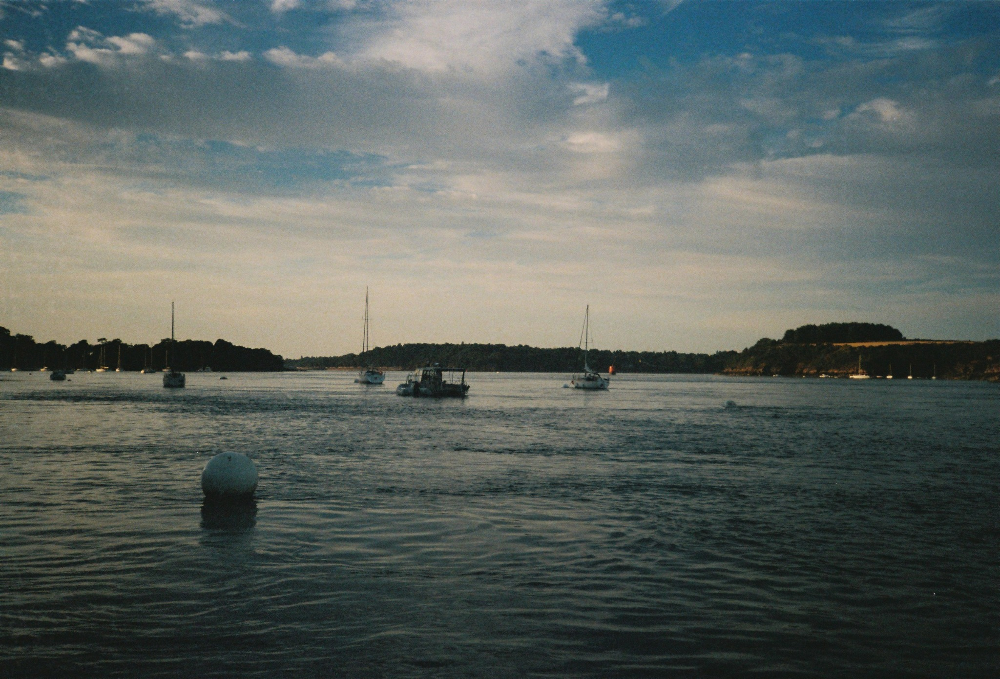
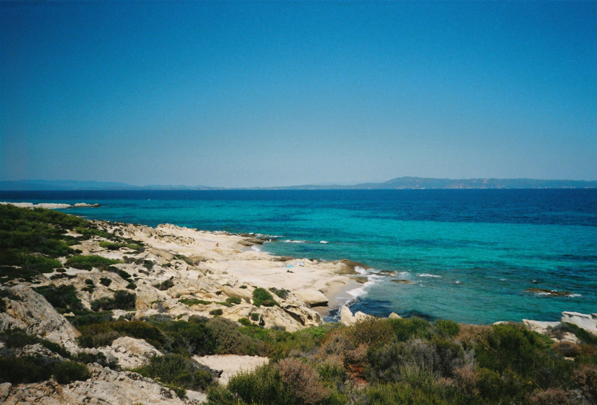
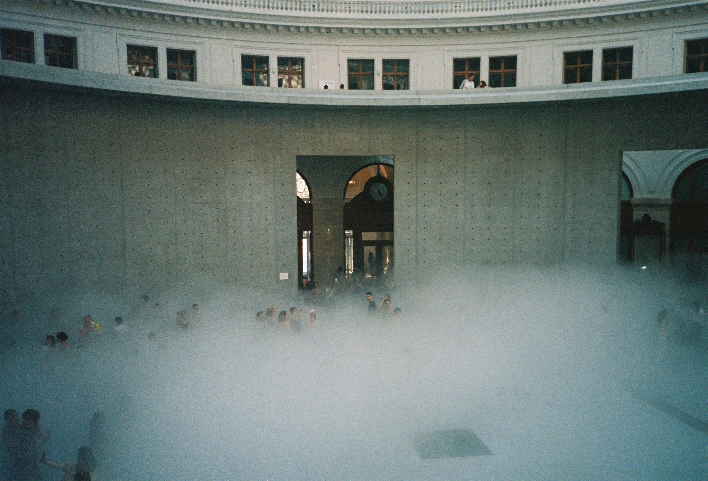

david
.
aba
.
denn
Photographie argentique
Carnet visuel — 2026
Fragments de voyages · 35 mm
Images
en
mémoire.
Des lieux traversés, des lumières qui passent, des instants conservés sur pellicule.
Photographies de david.aba.denn
Albums choisis
Sélection — 001 / 003

36 EXP. / 01
Bretagne
01 — FR
Ouvrir l'album
↗

36 EXP. / 02
Chalcidique
02 — GR
Ouvrir l'album
↗

36 EXP. / 03
Paris
03 — FR
Ouvrir l'album
↗
← Tous les albums
←
→
⤢
Fermer ✕
‹
›